For each of the parts, we first thought about what we were given and what the desired result should look like. For example, for the supersampling, we knew that we were given the triangle points and we needed to have the triangles appear more blurred at the corners and edges when increasing the super sample rates. We also thought about the steps that we needed to take, using the techniques learned in class. So for supersampling, we knew we needed to average a section of pixels at a time, but in order to code it, we also needed to think about things like how we would store our samples and how we would iterate through them to average them. In addition, we thought about other factors, such as edge cases and bound checks.
Many of the problems we encountered were when we thought our code should work in theory, as we believed we had implemented the right steps, but the result did not look right somehow. There were many small mistakes that would have a big impact on whether or not the image produced would look correct, so it was tedious to figure it out. Also, we had trouble debugging as it was difficult to locate the errors. Since most errors could only be seen graphically, it was difficult to debug since we did not know what numerical values or data to track to see what was going wrong. When we had errors, the best we could do was think about it in terms of the theory and figure out which part of the code was incorrect theoretically. We also thought about edge cases a lot, since flooring and rounding was used commonly throughout the project.
We also encountered a lot of segfaults in many of the tasks, like Task 2, 5 and 6. When this happened, we looked through our code and tried to see where there could be a potential problem with indexing or memory allocation with arrays. This is also where we focused a lot on edge cases, as well as the bounding cases.
To rasterize triangles we first found the minimum and maximum x and y coordinates of all the triangle vertices. We then made sure they were in bounds. Also, we created a helper method to return the value of the point-in-line test. To check each pixel, we used a double for loop for each point in the bounding box, and ran the point-in-triangle tests on them. We checked 2 sets of 3 point-in-line tests to check for each winding direction (counterclockwise and clockwise). The bounding box is determined by the min/max of the x and y coordinates. We only looped over the points in the box, so our algorithm is no worse than one that checks each sample within the bounding box of the triangle.
Screenshot of basic/test4.svg with the default viewing parameters and with the pixel inspector centered on an interesting part of the scene:
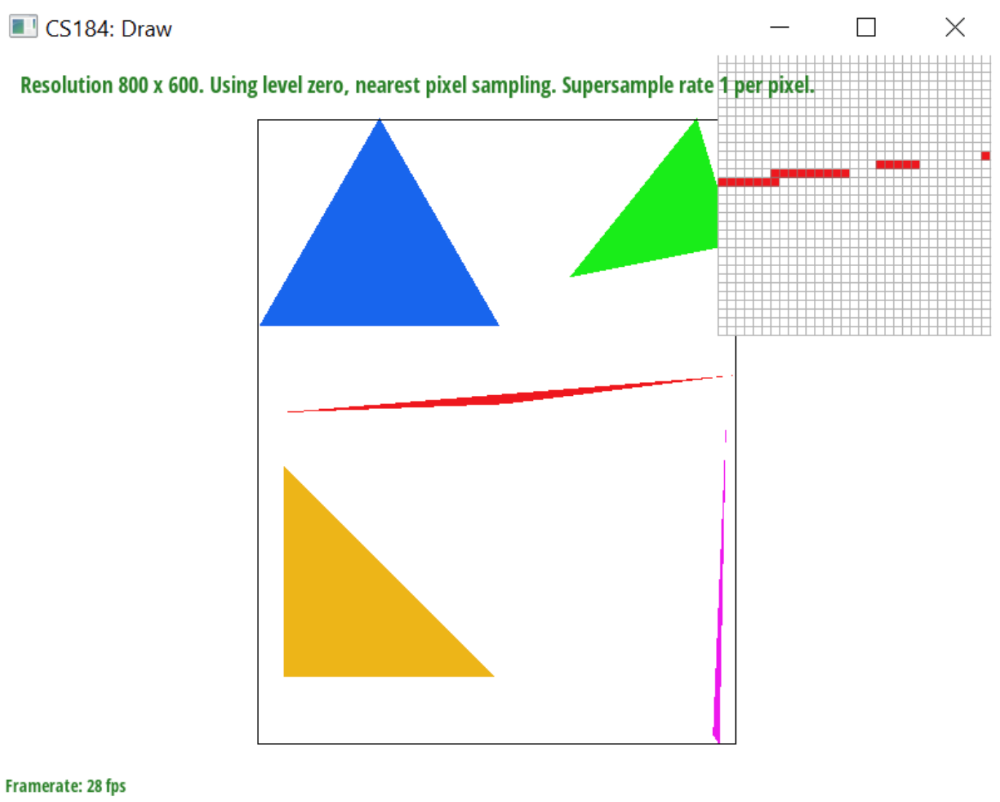Supersampling is used for antialiasing, such as removing jaggies and Moire patterns caused by low resolution. It does this by sampling at a higher resolution, then averaging down to the desired amount of pixels. First, we scaled up our bounding box values by the square root of the sample rate. Then we iterated through each point in the higher resolution bounding box and checked the point in line triangle tests using triangle points with the increased resolution and added the rasterized points into our sample buffer. Finally, after rasterizing all the SVG elements, we iterated through the pixels in the original resolution, and averaged the corresponding sample_rate-sized square in our sample buffer.
Screenshots of basic/test4.svg with the default viewing parameters aand sample rates 1, 4, and 16:
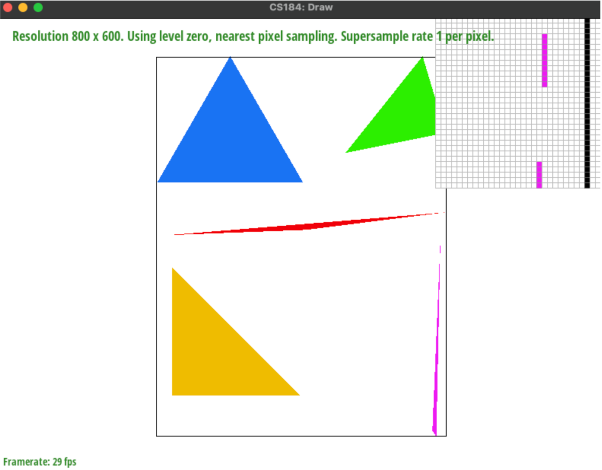 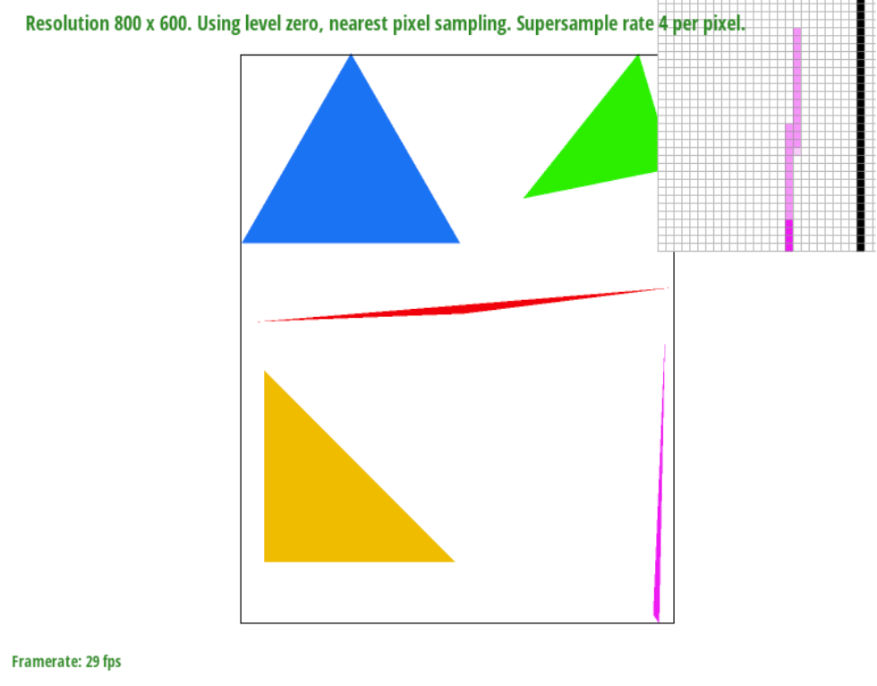 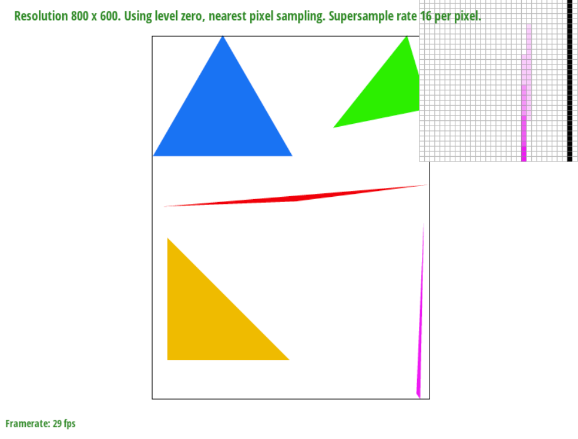For sample rate = 1, there is no supersampling, and for very long and narrow triangle corners, some of the triangle goes through the center of the pixel, while some other parts of the triangle tip are within the pixel, but miss the center, so the pixel does not get filled. Thus, this can create a gap. Another thing that happens at rate = 1 is jaggies, since the pixels are all squares so angled shapes will look jagged instead of like a smooth line. When the sample rate increases, the triangle is being sampled at a higher rate, so it is more likely for at least one of the samples to catch a part of the skinny corner, and then when it averages it, it fills up the pixel with a lighter value rather than no color at all. Thus, it appears as a smoother transition as the triangle corner becomes thinner.
Cubeman is now a ballerina robot. We made his arms in an oval-like shape and his right leg is kicked up behind him. We rotated his head and torso and his straight left leg, to show that he is leaping forward into this dance position.
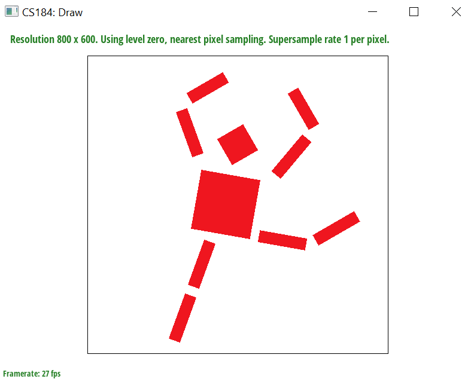Barycentric are used to interpolate across a triangle, by calculating a weighted sum of the values at the three vertices. If a point in the triangle is closer to a vertex than the other two, it will be more influenced by it, so it will have a higher weight for that vertex’s value. For example, the lower right part of the triangle above is very close to red, since it is near the red vertex, while in the middle, it looks brown, or a mixture of all the colors.
Explanation of barycentric coordinates and screenshot of svg/basic/test7.svg with default viewing parameters and sample rate 1:
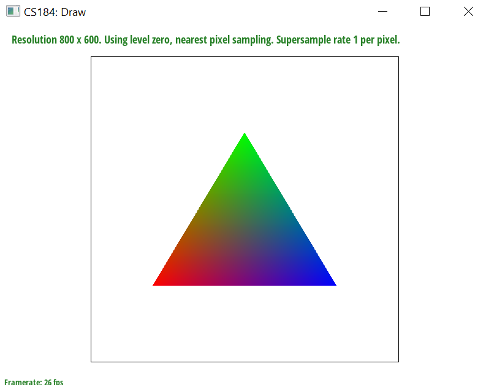 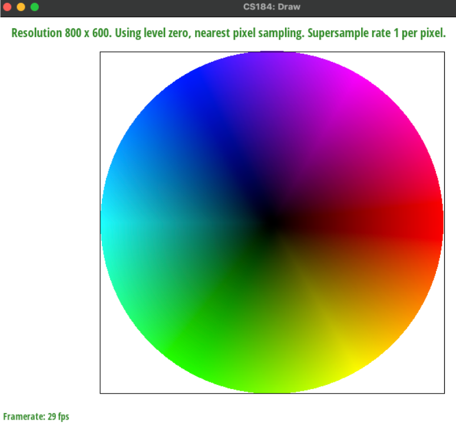Nearest sampling is where each pixel takes on the value of the closest pixel, so the pixels will be more apparent since the values are not continuous as they are taken from discrete locations. Bilinear sampling is where you take a weighted average of the 4 nearest sample locations, and interpolate them based on their fractional offsets to the desired texture value location. It will appear more smooth and blurred, since the interpolation is continuous.
screenshots using nearest sampling at 1 sample per pixel bilinear sampling at 1 sample per pixel: (we ended up not being able to get 16 samples per pixel due to segfaults)
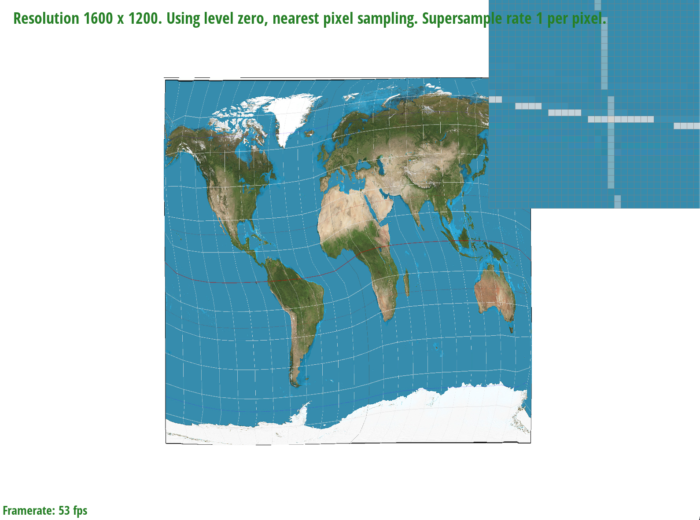For level sampling, we recursively average 4 squares together, and the squares increase size so that the resolution increases by powers of 2. We attempted to implement this for texture mapping by calculating the level based on the differential vectors and scaling them. Unfortunately we ran into issues with scaling the squares. Pixel sampling is the fastest and takes the least memory because we only look at one sample location per pixel, whereas we average multiple sample locations for the other techniques; however, it does not have as much antialiasing power because it's more discrete and not smoothing it out between adjacent areas.
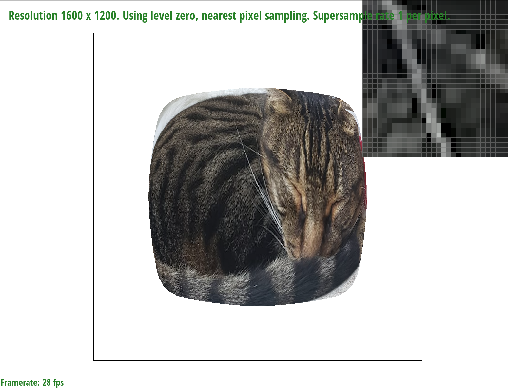 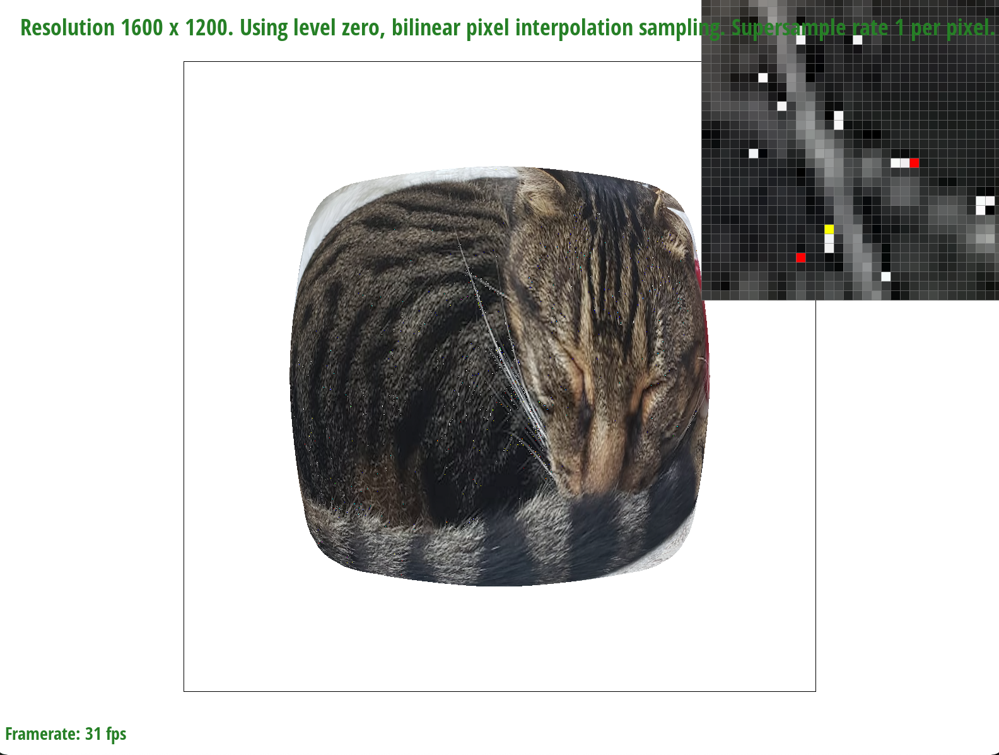 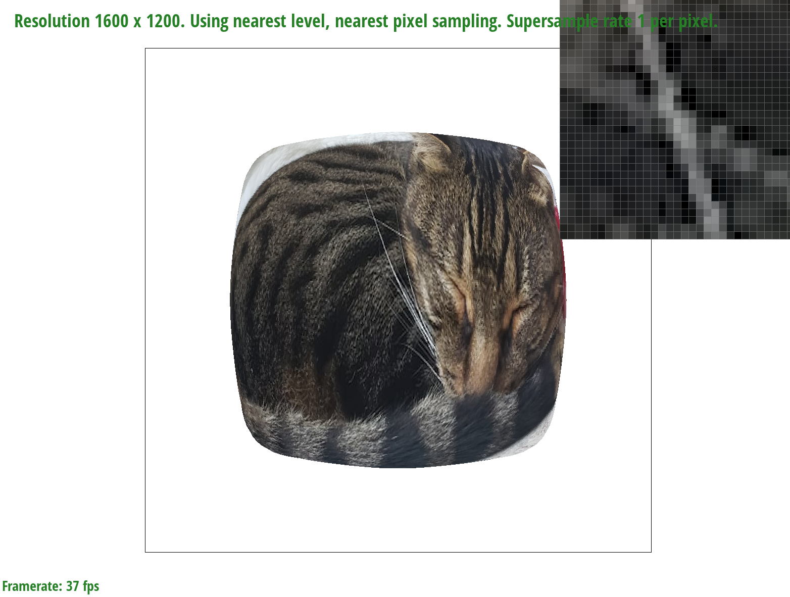 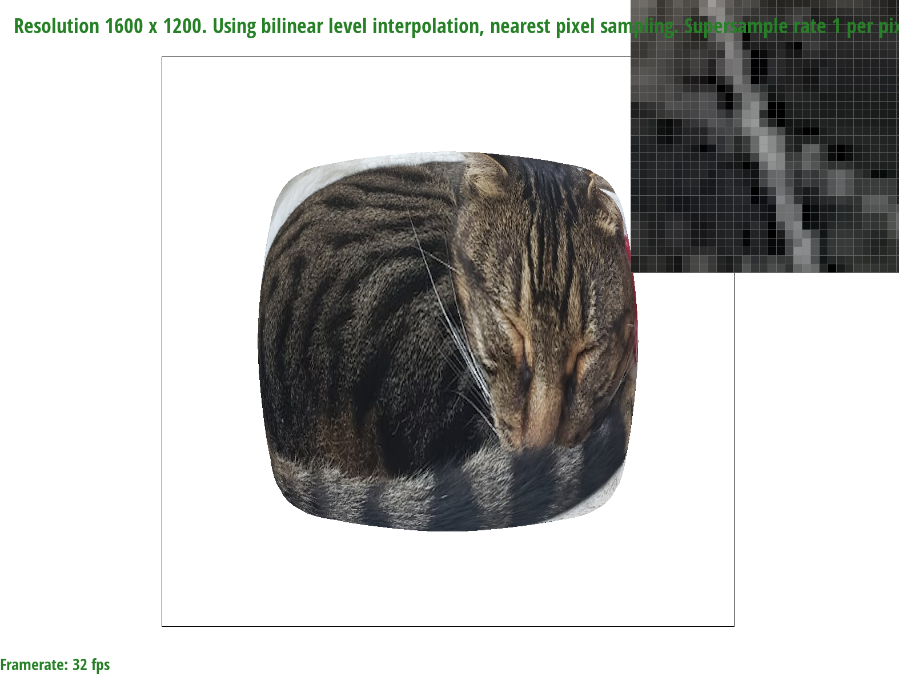